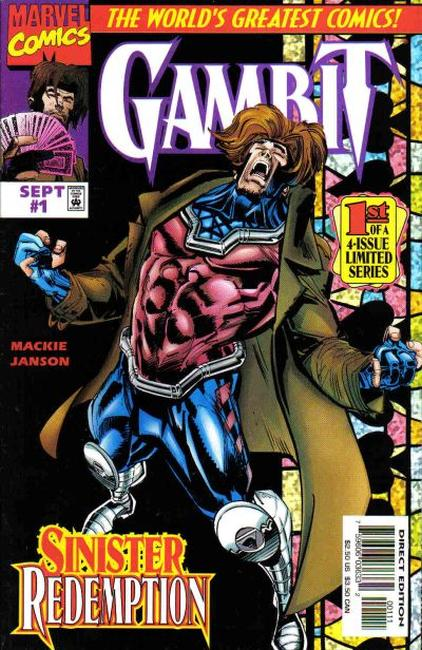
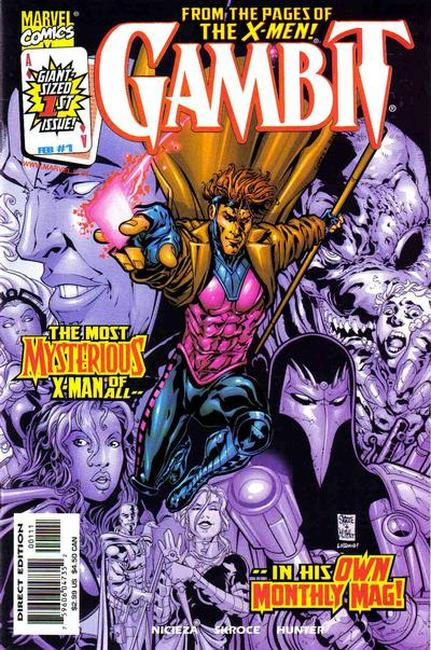

1993: Black cover with gold embossed logo, art by Lee Weeks. Tithing, script by Howard Mackie, pencils by Lee Weeks, inks by Klaus Janson.
Henri LeBeau sneaks into X-Mansion and tells his young step-brother, Gambit, that the time of the tithing has come and he is needed in New Orleans as the Assassins Guild is trying to break the old pacts; As they are speaking, Henri is cut down by an assassins arrow; Gambit gives chase and discovers that the killer is Julien, the "dead" brother of his wife; Learning that Bella Donna is also alive (she was "killed" in X-Men (Marvel, 1991 series) #8) Gambit and Rogue prepare to leave for New Orleans.

1997: Cover by Klaus Janson. Script by Howard Mackie, Illustrations by Klaus Janson.
"Falling Star"
Gambit is stealing a jeweled cross from a mob boss in Miami Beach when the astral form of Tante Mattie shows up to tell him the Lord has work for him to do; As gangsters with guns blazing chase him out to the beach, he encounters a beautiful, naked woman emerging from the waves; As Gambit tries to keep Anielle from getting caught in the crossfire, he is shot himself and falls into the ocean.

1999: Cover pencils by Steve Skroce, inks by Rob Hunter. 5 cover variants produced in equal numbers. The issue number box on this cover has an Ace of Diamonds card. Script by Fabian Nicieza, pencils by Steve Skroce, inks by Rob Hunter.
"The Man of Steal"
On top of his duties with the X-Men, Gambit begins running missions for the mysterious New Son; His first task involves stealing alien technology from ancient Chinese temples which brings him into direct conflict with the X-Cutioner and Elysian Enterprises. Solicitation for letters and upcoming art for the Gambit series. From the Journal of Nathaniel Essex text story; Mr. Sinister gives the origin and history of Gambit.
2004: Written by John Layman, Illustrations by Georges Jeanty, Cover by Greg Land.
"House of Cards"
The Ragin' Cajun is back with a vengeance in his very own ongoing series! Ever wonder what GAMBIT gets up to when he's not out saving the world with the X-MEN? Welcome to the exciting but treacherous terrain of the New Orleans underworld, where Gambit's skills and mastery are unquestioned...but this time, his confidence might be his downfall, the breakneck adventures of the smoothest, most charming devil ever to wear the X!
2012: Cover by Clay Mann, Written by James Asmus, Clay Mann.
When Marvel's premiere thief sets his sights on his biggest score yet, he may just end up over his head. It's going to take more than just playing cards and southern charm to get out of this one! BONUS: Bella Donna is NOT in this issue!